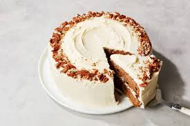
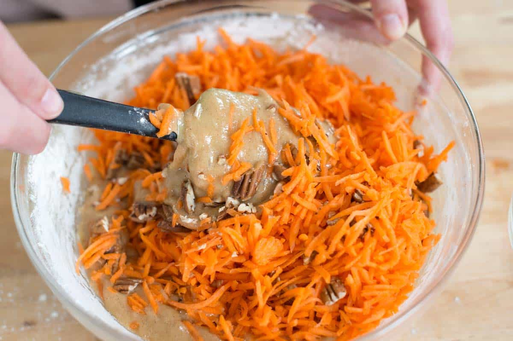
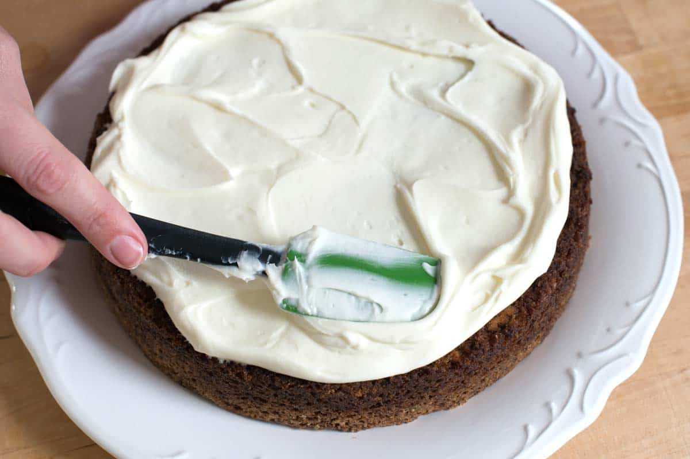

Healthy Carrot Cake
Ingredients
- 250g Unsweetened Applesauce
- 1 cup Grated Carrots
- ⅓ cup Unsweetened Vanilla Almond Milk
- 64g Granulated Erythritol
- 1 tsp Lemon Flavor
- ½ tsp Orange Flavor
- 1 tsp Liquid Stevia Extract
- 170g Sweet White Sorghum Flour
- 90g Oat Flour
- 1 tsp Ground Cinnamon
- 1 tsp Double-Acting Baking Powder
- ¼ tsp Salt
- ⅛ tsp Ground Nutmeg
Instructions
- Preheat the oven to 350 degrees Fahrenheit and line an 8" brownie pan with parchment paper both ways.
- In a large bowl, whisk together the applesauce, grated carrots, almond milk, erythritol, orange flavor/zest, lemon flavor/zest, and stevia extract.
- In a small bowl, whisk together the sorghum flour, oat flour, baking powder, salt, and nutmeg. Dump into the wet ingredients and stir together until the mixture is even .
- Scoop batter into the prepared pan and spread to the edges. Bake for ~45 minutes, or until the edges have browned slightly (the surface may form an air pocket on the surface in the oven, this is okay, it will deflate as it cools). Let blondies cool completely, then slice and serve! Keeps for ~1 weeks in an airtight container in the fridge.

